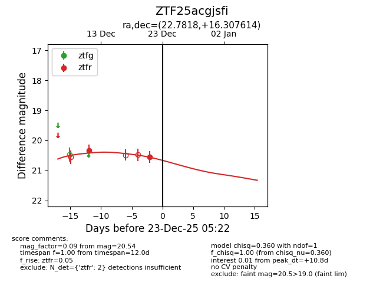
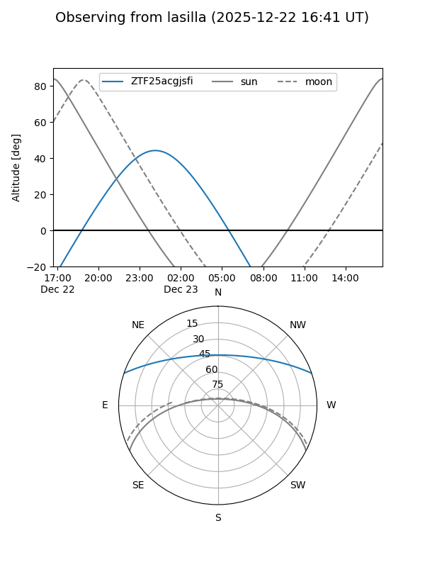
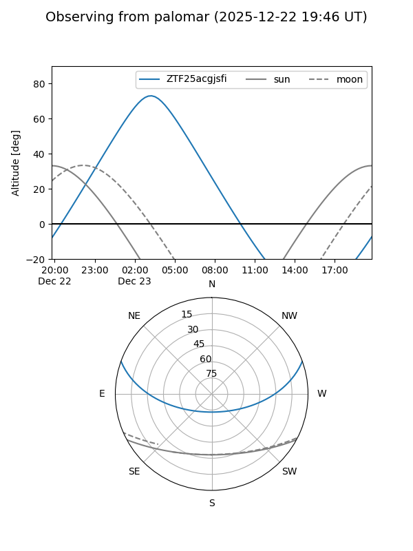
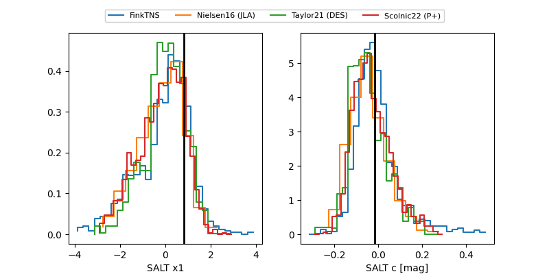

ZTF25acgjsfi
Target ZTF25acgjsfi at 2025-12-21 05:23
Aliases and brokers:
FINK: fink-portal.org/ZTF25acgjsfi
Lasair: lasair-ztf.lsst.ac.uk/objects/ZTF25acgjsfi
ALeRCE: alerce.online/object/ZTF25acgjsfi
alt names
ZTF25acgjsfi (ztf,fink_ztf)
Coordinates:
equatorial (ra, dec) = 22.7818,+16.30761
equatorial (HMS+DMS) = 01:31:07.62,+16:18:27.41
galactic (l, b) = (136.5820,-45.50960)
Flags:
Photometry:
last ztfr=20.54
2 ztfr detections
Lightcurve

Visibility


Additional plots
